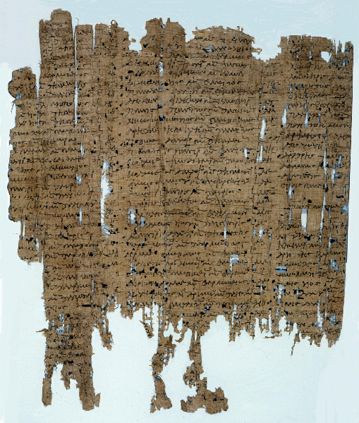

Census
Roll
AM 8918 (=
P.Princeton
III 123), early I c. AD

Also
available: a larger image (914k)
Background
and Physical Properties
Publ./Side:
recto and verso
Material:
Papyrus
Items:
1
Size:
27.9 x 23.7 cm
Lines:
(i) 37 lines (ii) 35 lines (iii) 30 lines
Negative:
Transparency
Conservation
Status: Broken on bottom and both sides. Parts of an upper margin remain.
Status:
Published
------------------------------------------------------------------------
Contents
Date:
Early I A.D.
Provenance:
Philadelphia (?)
Acquisition:
AM 8918
Language:
Greek.
Genre:
Documentary
Author:
Unknown
Type
of Text/Title of Work: Census List
Content:
List prepared by the officials preparing the census, giving the name of
the taxpayer, the names of his parents and his age.
------------------------------------------------------------------------
Information
on Publications
First
Edition
Series
and volume: Papyri in the Princeton University Collections II
Editor:
Kase, E.H.
Year:
1936
Pg/Nr:
15
Photo:
No